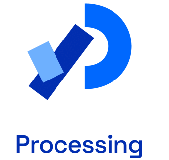

Processing & p5.js
Das Bild zeigt das Logo von Processing: ein stilisiertes „P“ mit grafischen Elementen, das für die kreative Programmiersprache steht. Processing wird genutzt, um Zeichnungen, Animationen und interaktive Projekte umzusetzen. Wir haben dabei mit p5.js gearbeitet, das auf JavaScript basiert und zum kreativen Programmieren genutzt wird.
prompt: Chatgpt
Input p5.js
Reto machte einen Input zum p5.js und stellte uns den Wochenplan vor. Wir sollten 2 Tage lang an den ersten 10 Aufgaben aus dem Moodle schaffen und am Mittwoch eine Gruppenarbeit zu dem Thema erledigen. Am Anfang war das für mich natürlich ein bisschen kompliziert, doch mit der Zeit fiel es mir immer leichter.
Uns wurde am Dienstag mitgeteilt, dass wir ab sofort unsere Wochenpläne auf Github hochladen, weil wir auf Winscp immer Hotspot benutzen müssen. Wir sollten es auch einrichten, dass wir alles erfolgreich hochladen können. Ich verstehe immer noch nicht, wie es ablaufen soll, doch ich werde am Montag morgen nachfragen.
Die 10 Aufgaben und die Gruppenarbeit
Ich habe gut angefangen mit den Aufgaben, ich habe 4 davon am ersten Tag geschafft zu erledigen. Sehr spannend fand ich die Aufgabe mit den Gesichtern, die mir sehr viel Spass gemacht hat. Ich habe nicht alle 10 Aufgaben fertig gelöst, weil mir wertvolle Zeit dafür genommen wurde, wir mussten nämlich Github installieren und einstellen. Reto sagte mir, es sei nicht tragisch, weil wir durch die Aufgaben Neues lernen sollen , damit wir gut in der Gruppe arbeiten können. Die Aufgabe für die Gruppe war, wir sollten ein mystisches Wesen programmieren und eine Animation hinzufügen.
Fazit
Die Arbeit mit p5.js war anfangs herausfordernd, wurde aber schnell leichter. Besonders die Aufgabe mit den Gesichtern hat mir viel Spass gemacht. Auch wenn ich nicht alle Aufgaben fertigstellen konnte, war das Einrichten von Github und die Gruppenarbeit sehr lehrreich. Die Übung hat meine Kenntnisse verbessert und gezeigt, wie spannend Teamarbeit ist.